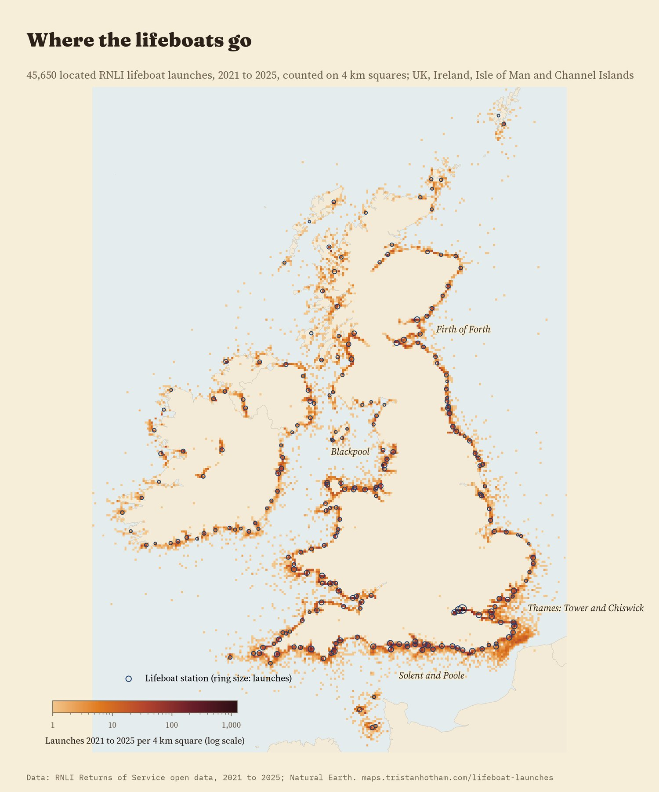
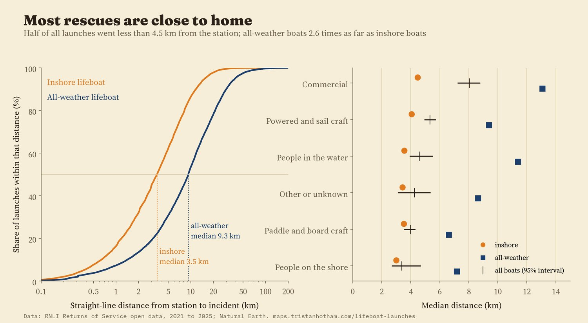
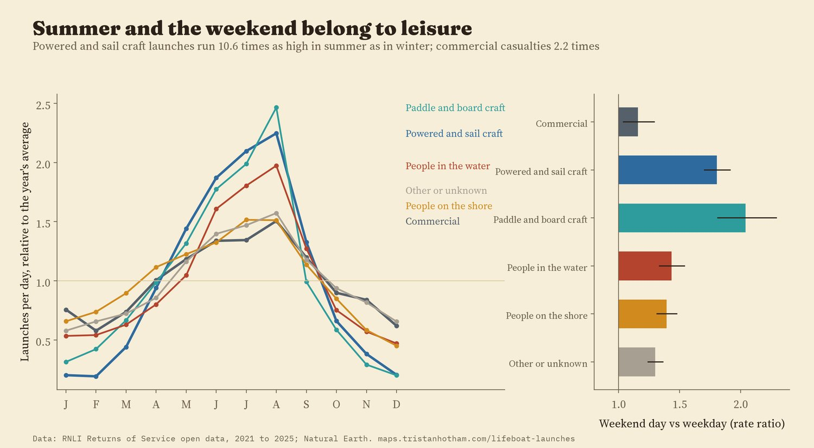
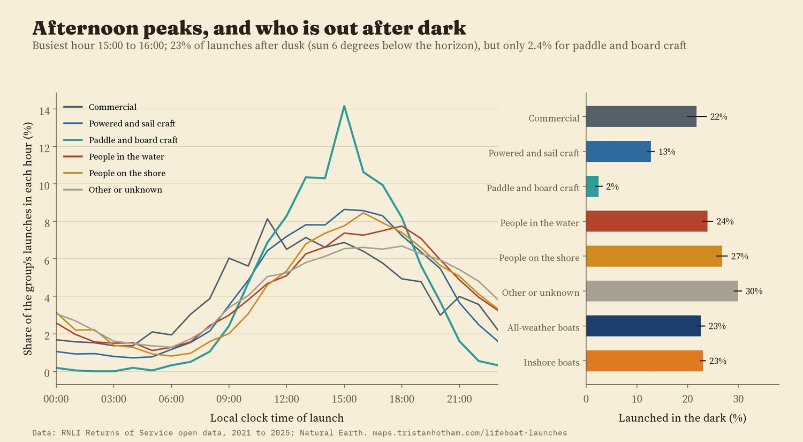
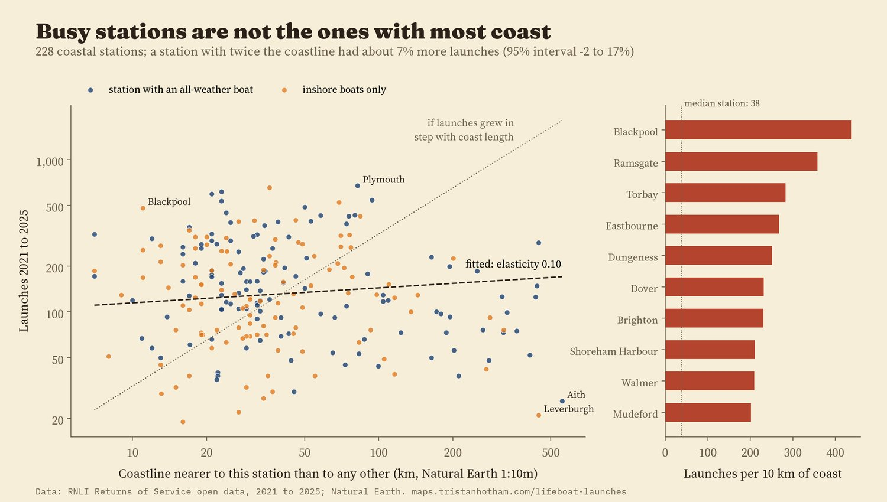
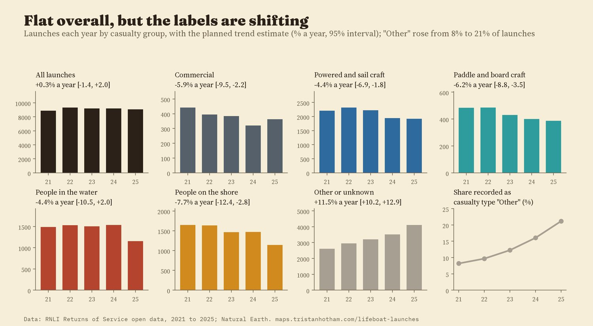

Every RNLI lifeboat launch from 2021 to 2025 with a location, 45,650 of them, counted on 1 km squares around the coasts of the UK, Ireland, the Isle of Man and the Channel Islands. Rings are the 238 stations, sized by launches. Filter by year, boat or casualty; tap a ring or a square.
When a pager goes off at a lifeboat station, volunteers drop what they are doing and run for the boat. The RNLI publishes a record of every launch: the station, the boat, the time, the weather, what kind of casualty it was and, since the record includes a position, where the boat went. I took the 45,673 launches of the five years 2021 to 2025, about 25 a day, and asked simple questions. Where do the lifeboats go? How far? For whom, and when?
The launches hug the coast. Half of them went less than 4.5 km from the station, as the crow flies, and 77% less than 10 km. Only 7.6% went more than 20 km. They are also bunched: on a grid of 2 km squares, half of all located launches fell in just 599 of the 9,689 squares that had any (6.2%).
The busiest place of all is not on the sea. Tower lifeboat station, on the Thames in central London, launched 3,077 times in five years, 6.7% of every launch in the data and about 1.7 a day. With the other Thames stations at Chiswick, Teddington and Gravesend, the river accounts for 11.8% of all launches. The three busiest 2 km squares are all on the Thames near Tower.

Located launches counted on 4 km squares (log scale); rings are stations sized by launches.
The RNLI has two main kinds of boat. All-weather lifeboats are large, fast, self-righting boats built for any sea. Inshore lifeboats are rigid or inflatable boats for shallow water, surf and rocks. The difference shows: the median inshore launch went 3.5 km, the median all-weather launch 9.3 km. Comparing the two kinds of boat at the same station, in the same month and year, the all-weather boat went 150% further (95% interval 119% to 185%). At 67 of the 68 stations with at least 30 launches of each kind, the all-weather boat's median trip was the longer one.
Fishing boats and other commercial casualties were reached further out than people in the water, by 27% at the same station (95% interval 16% to 40%). I expected motorboats and yachts to be further out too, but they were not: -4% (interval -11% to 4%).

Straight-line distance from station to incident. Right: medians with station-level bootstrap intervals.
August is the busiest month, with about 45 launches a day against 12 in January. But the summer rush belongs to leisure. Launches to motorboats, yachts and dinghies ran 10.6 times as high in June to August as in December to February, paddleboards, kayaks and other boards 6.9 times, people in the water 3.6 times, and commercial casualties only 2.2 times. The weekend tells the same story: a Saturday or Sunday brought 2.0 times the launches of a weekday for paddle and board craft and 1.8 times for powered and sail craft, but 1.16 times for commercial casualties.

Each group's daily launch rate by month, relative to its own yearly average; right, weekend days against weekdays with 95% intervals.
The busiest hour is 15:00 to 15:59. About 23% of launches happened in the dark (the sun more than 6 degrees below the horizon at the incident), and for people on the shore it was 27%. Paddle and board craft almost never need a lifeboat after dark: 2.4% of their launches. All-weather and inshore boats launched in the dark equally often (23% and 23%), which I did not expect.

Local clock time of launch, and the share launched after civil dusk.
A station's patch of coast says almost nothing about how busy it is. I gave every 1 km of coastline to its nearest coastal station. A station with twice as much coast had only about 7% more launches (95% interval -2% to 17%). Stations with an all-weather boat had 26% more launches than inshore-only stations in the same region. Per 10 km of coast, the busiest coastal station is Blackpool (437 launches in five years), against 38 at the median station; the quietest are in Shetland, Harris, the north-west Highlands and the west of Ireland, where one station covers hundreds of kilometres of intricate coast.

Coast length depends on the map's detail (here Natural Earth 1:10m); the result holds at 1:50m.
The total barely moved: 8,883 launches in 2021 and 9,080 in 2025, a trend of 0.3% a year (95% interval -1.4% to 2.0%). Most casualty groups fell, including paddle and board craft (-6.2% a year), but at the same time the share of launches recorded with the casualty type "Other" rose from 8% to 21%. Some of the falls may be launches that were simply labelled differently, so I would not read them as real declines. Paddleboards on their own, an extra look I had not planned, showed no clear trend (-0.1% a year, 95% interval -6% to 6%).

Planned trend estimates: Poisson model of monthly counts with calendar-month effects.
The records. The RNLI's Returns of Service open data: one row per lifeboat launch, 45,682 rows for 2021 to 2025. I dropped 9 training launches from headquarters and the college. 135 positions had lost the minus sign on their longitude (one Fishguard launch had been placed in the Netherlands) and were flipped back; 23 positions still more than 100 km from an inshore station or 250 km from an all-weather station were left off the map and out of the distances. I wrote down the analysis plan, with the hypotheses and checks, before computing any distance, trend or seasonal pattern.
Distance is a straight line from the station to the incident, not the route the boat took. The boat-type and casualty comparisons are made within stations, with standard errors clustered by station; the boat-type and commercial differences hold across all 14 checks: dropping the river and lake stations, the fixed longitudes, launches stood down before arriving, each region in turn, and more. A placebo that shuffles the boat type within each station gives differences of about zero.
What this cannot say. A launch is not an incident: two boats sent to one yacht make two rows, and many incidents are handled by coastguard helicopters, lifeguards, other services or the public. The position is the incident as recorded by the crew. I do not know how many people were aboard or how serious things were. The map shows launches on 1 km squares, not the individual records, which the RNLI's licence does not let me share.